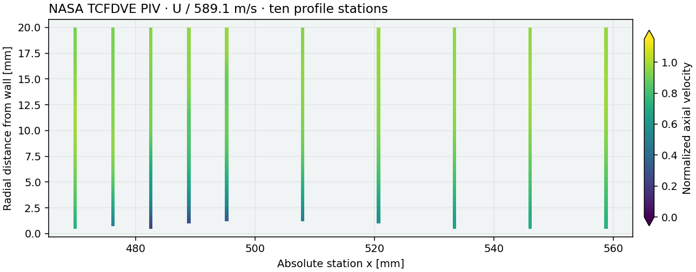

Mach 2.5 · NASA PIV + published RANS
The axisymmetric cone
A 16° half-angle cone generates a shock in NASA’s circular test section. Move a fixed-width radial window and watch the model preference change.

Move a 3 mm window
FUN3D at x = 482.60 mm. Absolute band-mean axial-velocity bias / 589.1 m/s, compared with PIV. Lower is better.
What you are seeing
The cone’s shock interacts with the test-section wall boundary layer. The two published closures can deviate from the experimental velocity in different parts of that layer. Integrating over radial bands lets you compare equal widths at different heights.
In the 1.5–4.5 mm band, SST-Vm has the lower absolute bias (0.05982 versus 0.09633). In the 12–15 mm band, SA leads (0.00740 versus 0.00796). The outer-band margin is small.
Evidence limits
These ranks describe the published velocity columns. The archive provides no paired uncertainty interval for the ranking. The experiment and RANS mean definitions and exact executed model options impose interpretation limits. Pressure taps, model wall-friction zero crossings and experimental oil-flow endpoints are distinct observations.
Sources and replay
NASA/TMR archive · Friedlander et al. · Reising et al. · Replay results
Run python -m analysis run m25 after downloading pinned inputs. Full replay commands · Conditions and units